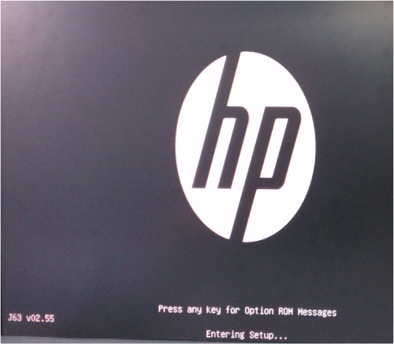
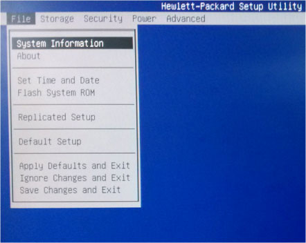
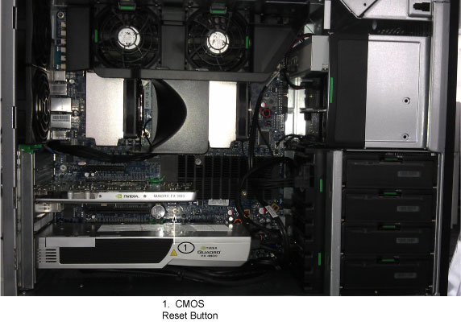

Operating Documentation
Direction 5193574-800, Rev# 22
LightSpeed 7.X Service Methods
Module Version 2.0, Version Date 1/28/14
Operating Documentation |
| Required Persons | Preliminary Reqs | Procedure | Finalization |
|---|---|---|---|
| 1 | Not Applicable | Not Applicable | Not Applicable |
The BIOS of the computer is a collection of machine language programs stored as firmware in ROM. The BIOS ROM includes such functions as POST, PCI device initialization, Plug 'n Play support, power management activities, and the BIOS Setup (F10) Utility. The BIOS Setup (F10) Utility enables you to change factory default settings and set or change the system configuration based on the Host PC hardware or system functionality requirements.
| Last revised: | 09 Jan 2014 |
| Item | Qty | Effectivity | Part# | Manufacturer | |
|---|---|---|---|---|---|
| Standard FE Toolkit | 1 | - | - | - | |
| HP Z820 BIOS file supplied by HP service | 1 | - | - | - | |
| ||||
| ELECTROCUTION HAZARD | ||||
| Disconnect AC power from the Host PC before reseating or replacing components because there is power to the system board even when the Host PC is powered down. | ||||
| USE PROPER LOCKOUT / TAGOUT PROCEDURES BEFORE REPLACING THE COMPONENTS. |
| ||||
| Do not turn the Host PC power off while the ROM is saving your BIOS Setup (F10) Utility changes or when flashing new BIOS ROM Code, because the CMOS could become corrupted. After you exit the F10 Setup screen, it is safe to remove all power from the Host PC. | ||||
The following information covers the necessary procedures for flashing and recovering from corrupted or incomplete flashing of the Host PC’s BIOS ROM. This is not to be confused with the BIOS Settings discussed later. The BIOS firmware code flashed to the BIOS ROM is the executable portion of the BIOS ROM code, which includes a default set of configuration settings. Later, customize these settings for the Host PC’s specific configuration details. You can save and restore these customized settings on CD for quick restoration in the event of BIOS ROM corruption or BIOS updating.
Remove the CD from the CD drive and power down the Host PC.
Insert the BIOS CD into the CD drive.
Power on the Host PC.
Press <F10> as soon as your display is active and the word Setup appears in the lower right corner of the screen. (See Illustration 1.)
Illustration 1: BIOS Splash Screen

| NOTE: | If you do not press <F10> at the appropriate time, you must try again. Restart the Host PC and press <F10> again to access the utility, or press <Ctrl+Alt+Delete> prior to boot if you miss the opportunity to press <F10>. |
In the BIOS Setup (F10) Utility menu, five headings are displayed: File, Storage, Security, Power, and Advanced. Use the left and right arrow keys to select the appropriate heading, then press <Enter>.
Select File > Flash System ROM. (See Illustration 2.)
Illustration 2: Flash System BIOS ROM Selection

Select the Optical Disk option and follow instructions on the screen to flash BIOS ROM.
Remove the BIOS CD from DVD drive.
On the File submenu, select File >Save Changes and Exit to reboot the Host PC.
The FailSafe Boot Block ROM allows for system recovery in the unlikely event of a ROM flash failure; for example, if a power failure occurs during a ROM upgrade. The Boot Block is a flash-protected section of the ROM that checks for a valid system ROM flash when the system is powered on, with the following results:
If the system ROM is valid, the system starts normally.
If the system ROM fails the validation check, the FailSafe Boot Block ROM provides enough support to start the system recovery from a BIOS CD.
When the Boot Block detects an invalid system ROM, the System Power LED blinks red eight times (once every second), followed by a two-second pause. You also hear eight beeps that correspond to the blinks. In some models, a Boot Block recovery mode message is displayed on the screen. To recover the system after it enters Boot Block recovery mode:
Remove the CD from the CD drive and power down the Host PC.
Insert the BIOS CD into the DVD drive.
Power on the Host PC.
| NOTE: | If no BIOS CD is found, you are prompted to insert one and restart the Host PC. If the system successfully starts and successfully reprograms the ROM, then the three keyboard lights illuminate. A rising tone series of beeps also signals successful completion. |
Remove the BIOS CD and restart the system.
The BIOS Setup (F10) Utility enables you to do the following:
Change factory default settings and set or change the system configuration, which might be necessary when you add or remove hardware.
Determine if all of the devices installed on the workstation are recognized by the system and functioning properly.
Determine information about the operating environment of the workstation.
Solve system configuration errors detected but not automatically fixed during the Power-On Self-Test (POST).
Establish and manage energy-saving time-outs (not supported for Linux platforms).
Modify or restore factory default settings.
Set the system date and time.
Set, view, change, or verify the system configuration, including settings for processor, graphics, memory, audio, storage, communications, and input devices.
Modify the boot order of installed mass storage devices, such as SATA, IDE (ATA), SAS, SCSI, diskette drives, optical drives, network drives, and LS-120 drives.
Configure the boot priority of SATA, IDE (ATA), and SAS hard drive controllers.
Select POST Messages Enabled or Disabled to change the display status of POST messages. POST Messages Disabled suppresses most POST messages, such as memory count, product name, and other non-error text messages. If a POST error occurs, the error is displayed regardless of the mode selected. To manually switch to POST Messages Enabled during POST, press any key (except F1 through F12).
Secure the integrated I/O functionality, including the serial, USB, or parallel ports, audio, or embedded NIC, so that the I/O functionality cannot be used until they are unsecured.
Enable or disable removable media boot ability.
Enable or disable removable media write ability (when supported by hardware).
Replicate your system setup by saving system configuration information on diskette and restoring it on one or more workstations.
| NOTE: | You can only open the BIOS Setup (F10) Utility by powering
on the Host PC or restarting the system. To access the BIOS Setup (F10) Utility menu, perform the following steps: |
Power on or restart the Host PC.
Press <F10> as soon as your display is active and the word Setup appears in the lower right corner of the screen.
| NOTE: | If you do not press <F10> at the appropriate time, you must restart the Host PC and try again. Alternatively, you can press <Ctrl+Alt+Delete> prior to boot if you miss the opportunity to press <F10>. |
Select your language from the list, and press [Enter]. In the BIOS Setup (F10) Utility menu, five headings are displayed: File, Storage, Security, Power, and Advanced.
Use the left and right arrow keys to select the appropriate heading. Use the up and down arrow keys to select the option you want, and press Enter.
To apply and save changes, select File > Save Changes and Exit. Host PC will reboot.
| NOTE: | If you made changes that you do not want applied, select File > Ignore Changes and Exit. To reset to factory settings:
|
This section describes the steps necessary to save and restore Z820 BIOS Settings (Table 1).
Perform the following steps to save the Host PC BIOS Settings as default settings (settings currently configured and stored in ROM):
Reboot the Host PC, and press and hold <F10> until you enter the Computer Setup (F10) Utility.
Select File > Default Setup > Save Current Settings as Default. Follow the instructions on the screen to create the new Default BIOS Settings.
To apply and save changes, select File > Save Changes and Exit. The Host PC reboots.
Perform the following steps to restore the Host PC BIOS settings from default settings (BIOS Settings currently saved in Defaults Settings of ROM):
Reboot the Host PC, and press and hold <F10> until you enter the Computer Setup (F10) Utility.
Select File > Apply Defaults and Exit. Follow the instructions on the screen to apply default BIOS Settings. The Host PC reboots.
Perform the following steps to restore the Host PC BIOS factory settings (stored in ROM) as default settings:
Reboot the Host PC, and press and hold <F10> until you enter the Computer Setup (F10) Utility.
Select File > Default Setup > Restore Factory Settings as Default. Follow the instructions on the screen to apply factory default BIOS settings.
To apply and save changes, select File > Save Changes and Exit. The Host PC reboots.
| NOTE: | Restore BIOS settings per Table 1. |
Although rare, the BIOS Settings portion of the Host PC’s BIOS can corrupt, causing Host PC boot issues and POST errors. In the event that you suspect the BIOS Settings is corrupted, perform the following steps to clear/reset the setting to the HP factory default values.
Shut down the operating system, and power off the Host PC and any external devices.
Disconnect the power cord of the Host PC and any external devices from the power outlets.
Disconnect the keyboard, monitor, and any other external devices that are connected to the workstation.
Remove the access panel.
| NOTE: | Pushing the CMOS (BIOS Settings) button resets CMOS values to HP factory defaults and erases any customized information, including passwords, asset numbers, and special settings. It is important to back up the Host PC BIOS settings (Table 1) before resetting them in case they are needed later. It is also important to back up the Host PC’s BIOS Setting before BIOS corruption occurs, otherwise you need to configure the BIOS setting manually. |
Locate, press, and hold the CMOS button (Illustration 3) in for five seconds.
| NOTE: | Be sure that the AC power cord is disconnected from the power outlet. The CMOS button does not clear CMOS if the power cord is connected. |
Illustration 3: BIOS Setting (CMOS) Reset Button

Replace the access panel.
Reconnect any external devices.
Plug in and power on the Host PC.
| NOTE: | The workstation passwords, and any special configurations, along with the system date and time, must be reset. |
Restore the saved BIOS Setting from the locally-created BIOS Setting Floppy, or manually configure the BIOS settings.
To apply and save changes, select File > Save Changes and Exit. The Host PC reboots.
Table 1: Z820 BIOS Settings Changes From Defaults
| Parameter | Sub-parameter | Setting |
| BIOS Revision: | ||
| Storage | Storage Options | Removable Media Boot = Enabled |
| SATA Mode = RAID + AHCI | ||
| Boot Order | UEFI Boot Sources = Disabled | |
| Legacy Boot Sources | ||
| ATAPI CD/DVD Drive | ||
| Hard Drive | ||
| USB Hard Drive = Disabled | ||
| USB Floppy/CD | ||
| Security | Device Security | SAS Controller = Device available |
| SCU Controller = Device available | ||
| USB3 Controller = Device hidden | ||
| Azalia HD Audio= Device available | ||
| 1394 Controller = Device available | ||
| NIC Controller (AMT) = Device available | ||
| NIC Controller = Device available | ||
| SATA0 = Device available | ||
| SATA1 = Device available | ||
| Serial Port A = Device available | ||
| USB Security | Front USB Ports = Enabled | |
| USB Ports 1 = Enabled | ||
| USB Ports 2 = Enabled | ||
| USB Ports 3 = Enabled | ||
| Rear USB Ports = Enabled | ||
| USB Ports 1= Enabled | ||
| USB Ports 2 = Enabled | ||
| USB Ports 3 = Enabled | ||
| USB Ports 4 = Enabled | ||
| USB3 Ports 5 = Enabled | ||
| USB3 Ports 6= Enabled | ||
| Internal USB Ports = Enabled | ||
| USB Ports 1= Enabled | ||
| USB Ports 2 = Enabled | ||
| USB Ports 3 = Enabled | ||
| Slot Security | Slot 1 - PCI Express x4 = Enabled | |
| Slot 2 - PCI Express x16 = Enabled | ||
| Slot 3 - PCI Express x8 = Enabled | ||
| Slot 4 - PCI Express x16 = Enabled | ||
| Slot 5 - PCI Express x4 = Enabled | ||
| Slot 6 - PCI Express x16 = Enabled | ||
| Slot 7 - PCI = Enabled | ||
| Network Boot | Network Boot = Disabled | |
| System Security | Data Execution Prevention = DISABLED | |
| Virtualization Technology (VTx) = DISABLED | ||
| Power | OS Power Management | Runtime Power Management = Disabled |
| Turbo Mode = Disabled | ||
| Idle Power Savings = Normal | ||
| PCIe Performance Mode = Disabled | ||
| Unique Sleep State Blink Rates = Disabled | ||
| Hardware Power Management | S5 Maximum Power Savings = Disabled | |
| Thermal | Fan Idle mode = level 4 | |
| Advanced | Power-on Options | POST Messages = Disabled |
| Press the ESC key for startup Menu = Enabled | ||
| Option ROM Prompt = Enabled | ||
| Mini Option ROM Display = Disabled | ||
| After Power Loss = On | ||
| Post Delay ( in seconds) = None | ||
| Bypass F1 Prompt on Configuration Change = Disabled | ||
| Remote Wakeup Boot Source = Local Hard Drive | ||
| Factory Recovery Boot Support = Enabled | ||
| BIOS Power-on | Sunday = Disabled | |
| Monday = Disabled | ||
| Tuesday = Disabled | ||
| Wednesday = Disabled | ||
| Thursday = Disabled | ||
| Friday = Disabled | ||
| Saturday = Disabled | ||
| Time (hh: mm) = 00:00 | ||
| Bus Options | Numa = Enabled | |
| PCI SERR# Generation = Enabled | ||
| PCI VGA Palette Snooping = Disabled | ||
| PCI Latency Timer = 128 PCI Bus Clocks | ||
| Legacy ACPI CPU Table = Disabled | ||
| Device Options | Num Lock State at Power-On = Off | |
| S5 Wake on LAN = Disabled | ||
| Internal Speaker = Enabled | ||
| NIC (AMT) Option ROM Download = Disabled | ||
| NIC Option ROM Download = Disabled | ||
| SAS Option ROM Download = Enabled | ||
| PXE Option ROMS = Legacy | ||
| Mass Storage Option ROMs = Legacy | ||
| Video Option ROMS = Legacy | ||
| Multi-Processor = Enabled | ||
| Active Processor Cores = All | ||
| Hyper-Threading = Enabled | ||
| CECP Mode = Disabled | ||
| Slot Settings | Slot 1 Option ROM Download = Disabled Limit PCIe Speed = Auto | |
| Slot 2 Option ROM Download = Enabled Limit PCIe Speed = Auto | ||
| Slot 3 Option ROM Download = Disabled Limit PCIe Speed = Auto | ||
| Slot 4 Option ROM Download = Disabled Limit PCIe Speed = Auto | ||
| Slot 5 Option ROM Download = Disabled Limit PCIe Speed = Auto | ||
| Slot 6 Option ROM Download = Disabled Limit PCIe Speed = Auto | ||
| Slot 7 Option ROM Download = Disabled | ||
| Management Operations | AMT = Disabled |
After running any of the procedures in this document, ensure that BIOS settings conform to those in Table 1.